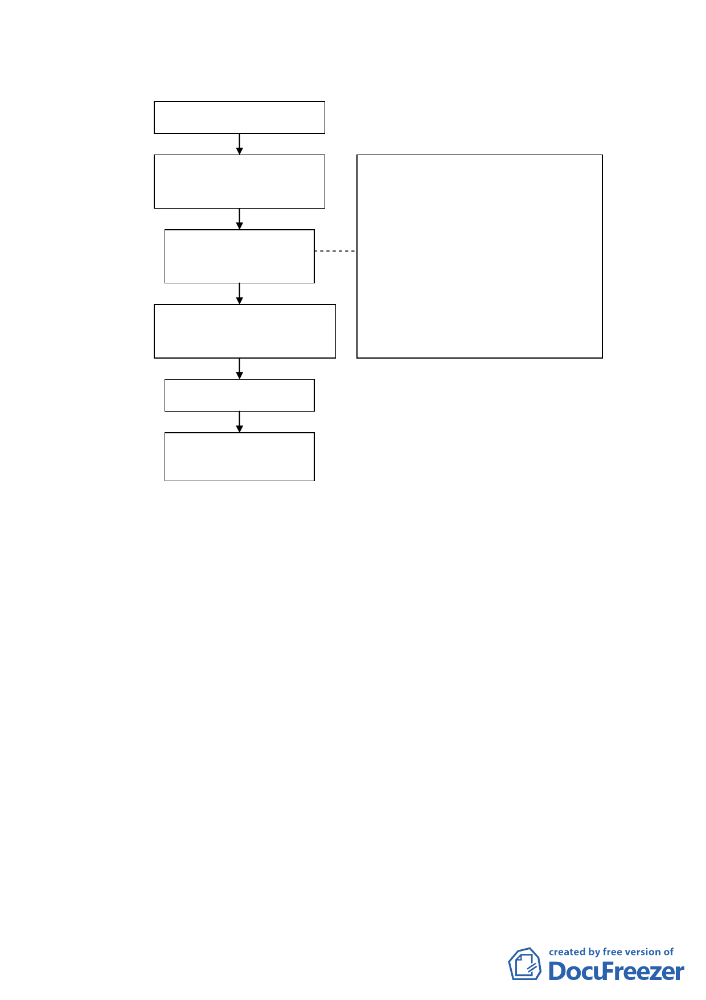

市府送都市更新單元案
都委會完成初審前之資
料檢視及彙整
小組委員初審都市更
新申請範圍案
彙整審查結果
（初審結果表如附件一）
1.將本會委員除主任委員、副主任委
員外共 19 位輪流參與小組，成員
以府外 2 位、府內 2 位委員為一組。
2.每組推派一位召集人，配合委員會
議期程，召開審查會議，並作成初
審建議提委員會議確認。
3.原則每月於委員會議前召開一次初
審會議，每組負責 2 個月之初審工
作。
提送委員會議確認
錄案送回市府辦理更
新範圍公告
本會幕僚建議都市更新單元範圍劃定案件審議流程
決議：有關都市更新單元劃定範圍之案件，鑒于更新條例對劃定範
圍之審議機制已有所修正，決議於市府主管機關依「都市更
新條例」規定組成專責機構進行審議前，仍由本會進行審議
事宜，並依所建議流程辦理，以簡化作業。
討論事項八
案名：變更劃定「臺北市大安區復興段二小段 165 地號等 36 筆土
地為更新單元」都市更新計畫案
案情概要說明：
一、本更新單元位於臺北市復興南路 1 段、忠孝東路 4 段、忠
孝東路 4 段 26 巷所圍街廓內，計畫面積 1,727 平方公尺。
7